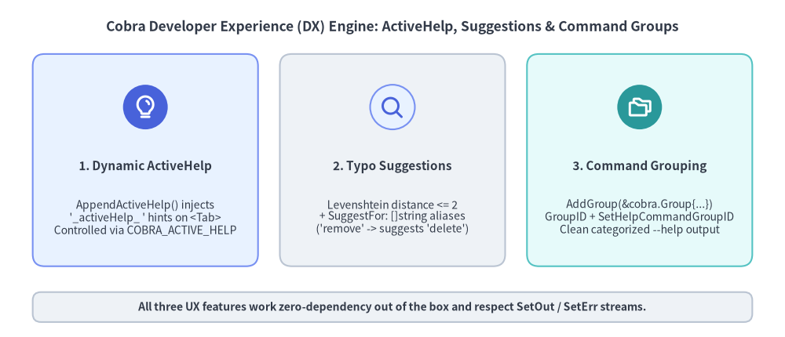
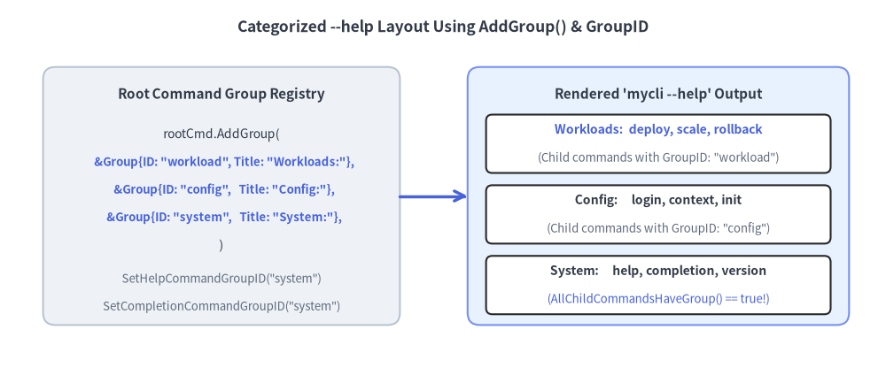

ActiveHelp, Suggestions & Help Templates
Great developer experience (DX) in a CLI goes beyond fast execution: it guides users interactively while they type, recovers gracefully from typos, and organizes dozens of subcommands into scannable visual categories. Cobra v1.10.2 ships three built-in UX subsystems for this purpose: ActiveHelp (active_help.go), Levenshtein + Explicit Typo Suggestions (command.go), and Command Groups (cobra.Group).

Source Code
from drawlib.canvas import save, setup
from drawlib.icons import phosphor
from drawlib.shapes import rectangle
from drawlib.smartarts import CardList
from drawlib.styles import Styles
from drawlib.text import text
setup(width=144, height=62)
text(
(72, 57),
"Cobra Developer Experience (DX) Engine: ActiveHelp, Suggestions & Command Groups",
style=Styles.DarkBold.patch(text_size=12.5),
)
cards = CardList(
style=Styles.Neutral,
text_style=Styles.DarkBold.patch(text_size=11.0),
description_style=Styles.Dark.patch(text_size=10.0),
badge_shape="circle",
badge_style=Styles.PrimaryNeutral,
icon_style=Styles.PrimaryBold,
direction="horizontal",
show_arrows=False,
spacing=4.0,
)
cards.add(
"1. Dynamic ActiveHelp",
"AppendActiveHelp() injects\n'_activeHelp_ ' hints on <Tab>\nControlled via COBRA_ACTIVE_HELP",
icon=phosphor.lightbulb,
style=Styles.PrimaryNeutral,
badge_style=Styles.PrimaryFlat,
icon_style=Styles.WhiteBold,
)
cards.add(
"2. Typo Suggestions",
"Levenshtein distance <= 2\n+ SuggestFor: []string aliases\n('remove' -> suggests 'delete')",
icon=phosphor.magnifying_glass,
style=Styles.Neutral,
)
cards.add(
"3. Command Grouping",
"AddGroup(&cobra.Group{...})\nGroupID + SetHelpCommandGroupID\nClean categorized --help output",
icon=phosphor.folders,
style=Styles.SecondaryNeutral,
badge_style=Styles.SecondaryFlat,
icon_style=Styles.WhiteBold,
)
cards.draw(xy=(6, 13), width=132, height=39)
rectangle((72, 5.5), width=132, height=5.5, style=Styles.Neutral.patch(shape_r=1.5))
text(
(72, 5.5),
"All three UX features work zero-dependency out of the box and respect SetOut / SetErr streams.",
style=Styles.DarkBold.patch(text_size=10.0),
)
save()
1. Contextual Inline Hints with ActiveHelp (active_help.go)
While normal shell completions suggest values to insert into the command line, ActiveHelp displays non-selectable instructional banners directly inside the user's terminal when <Tab> is pressed (supported in Bash 4.4+, Zsh, and Fish).
How AppendActiveHelp and GetActiveHelpConfig Work
Under the hood (active_help.go:23-60), cobra.AppendActiveHelp(compArray, msg) appends a special marker entry prefixed with "_activeHelp_ " to your completion slice. The shell completion script intercepts lines starting with _activeHelp_ and prints them as status hints rather than selectable completion tokens.
Users can customize or disable ActiveHelp globally or per-binary via environment variables:
- Global Disable (
COBRA_ACTIVE_HELP=0): Settingexport COBRA_ACTIVE_HELP=0forcescobra.GetActiveHelpConfig(cmd)to return"0"for all Cobra-based binaries. - Program-Specific Config (
<PROGRAM>_ACTIVE_HELP): IfCOBRA_ACTIVE_HELPis not"0", Cobra reads<ROOT_NAME>_ACTIVE_HELP(uppercase root command name with non-ASCII-alphanumeric characters replaced by_, e.g.,my-cli$\rightarrow$MY_CLI_ACTIVE_HELP).
cmd.ValidArgsFunction = func(
cmd *cobra.Command,
args []string,
toComplete string,
) ([]cobra.Completion, cobra.ShellCompDirective) {
var comps []cobra.Completion
cfg := cobra.GetActiveHelpConfig(cmd)
if len(args) == 0 {
if cfg != "0" {
comps = cobra.AppendActiveHelp(
comps,
"Tip: Select a target environment first (use --dry-run to preview changes)",
)
}
comps = append(comps,
cobra.CompletionWithDesc("staging", "Pre-production environment"),
cobra.CompletionWithDesc("prod", "Production environment"),
)
if cfg == "verbose" {
comps = cobra.AppendActiveHelp(
comps,
"Note: Production deployments require --ticket-id approval",
)
}
return comps, cobra.ShellCompDirectiveNoFileComp
}
return nil, cobra.ShellCompDirectiveNoFileComp
}
2. Levenshtein Typo Suggestions & SuggestFor (command.go)
When a user mistypes a subcommand (or supplies an invalid argument to cobra.OnlyValidArgs), Cobra automatically searches for close matches using case-insensitive Levenshtein edit distance (ld() in cobra.go:196-234) plus prefix matching:
Field / Method on cobra.Command |
Default | Purpose & Behavior |
|---|---|---|
DisableSuggestions |
false |
Set true on the parent command to disable "Did you mean this?" prompts. |
SuggestionsMinimumDistance |
2 |
Maximum Levenshtein edit distance to consider a match (defaults to 2 when <= 0). |
SuggestFor ([]string) |
nil |
Explicit words/synonyms from other CLIs that should suggest this command regardless of edit distance. |
cmd.SuggestionsFor(typedName) |
Method | Programmatically returns the slice of suggested subcommand names for typedName. |
Bridging Muscle Memory with SuggestFor
Levenshtein distance catches typos like mycli deply $\rightarrow$ deploy (distance 1), but it cannot catch semantic synonyms like a user typing mycli remove or mycli erase when your command is named delete (distance 4). Populate SuggestFor to guide users migrating from other tools without polluting your command namespace with permanent Aliases:
deleteCmd := &cobra.Command{
Use: "delete <resource-id>",
Short: "Delete a cluster resource permanently",
// Users typing 'mycli remove' or 'mycli destroy' get:
// Error: unknown command "remove" for "mycli"
// Did you mean this?
// delete
SuggestFor: []string{"remove", "rm", "destroy", "erase"},
Args: cobra.ExactArgs(1),
RunE: runDelete,
}
3. Organizing --help Output with Command Groups (cobra.Group)
Once a CLI grows beyond 6–8 subcommands, a single flat alphabetical list under Available Commands: becomes difficult to scan. Cobra v1.10.2 lets you partition subcommands into titled sections using cmd.AddGroup(&cobra.Group{ID, Title}) and GroupID.

Source Code
from drawlib.canvas import save, setup
from drawlib.lines import line
from drawlib.shapes import rectangle
from drawlib.styles import Styles
from drawlib.text import text
setup(width=144, height=60)
text(
(72, 55.5),
"Categorized --help Layout Using AddGroup() & GroupID",
style=Styles.DarkBold.patch(text_size=12.5),
)
# Left: Root Command Registration
rectangle((36, 28), width=58, height=42, style=Styles.Neutral.patch(shape_r=2.0))
text((36, 44.5), "Root Command Group Registry", style=Styles.DarkBold.patch(text_size=11.0))
text((36, 38.0), "rootCmd.AddGroup(", style=Styles.Dark.patch(text_size=10.0))
text((36, 33.5), " &Group{ID: \"workload\", Title: \"Workloads:\"},", style=Styles.PrimaryBold.patch(text_size=9.5))
text((36, 29.0), " &Group{ID: \"config\", Title: \"Config:\"},", style=Styles.PrimaryBold.patch(text_size=9.5))
text((36, 24.5), " &Group{ID: \"system\", Title: \"System:\"},", style=Styles.PrimaryBold.patch(text_size=9.5))
text((36, 20.0), ")", style=Styles.Dark.patch(text_size=10.0))
text((36, 14.5), "SetHelpCommandGroupID(\"system\")", style=Styles.Muted.patch(text_size=9.5))
text((36, 10.0), "SetCompletionCommandGroupID(\"system\")", style=Styles.Muted.patch(text_size=9.5))
# Right: Rendered Help Output
rectangle((107, 28), width=62, height=42, style=Styles.PrimaryNeutral.patch(shape_r=2.0))
text((107, 44.5), "Rendered 'mycli --help' Output", style=Styles.DarkBold.patch(text_size=11.0))
rectangle((107, 36.5), width=56, height=9.5, style=Styles.White.patch(shape_r=1.0))
text((107, 38.8), "Workloads: deploy, scale, rollback", style=Styles.PrimaryBold.patch(text_size=10.0))
text((107, 34.2), "(Child commands with GroupID: \"workload\")", style=Styles.Muted.patch(text_size=9.5))
rectangle((107, 25.0), width=56, height=9.5, style=Styles.White.patch(shape_r=1.0))
text((107, 27.3), "Config: login, context, init", style=Styles.DarkBold.patch(text_size=10.0))
text((107, 22.7), "(Child commands with GroupID: \"config\")", style=Styles.Muted.patch(text_size=9.5))
rectangle((107, 13.5), width=56, height=9.5, style=Styles.White.patch(shape_r=1.0))
text((107, 15.8), "System: help, completion, version", style=Styles.DarkBold.patch(text_size=10.0))
text((107, 11.2), "(AllChildCommandsHaveGroup() == true!)", style=Styles.Primary.patch(text_size=9.5))
line((65, 28), (76, 28), arrow_head="->", style=Styles.PrimaryBold)
save()
Grouping Subcommands & Eliminating "Additional Commands:"
By default, Cobra places help and completion under a trailing Additional Commands: heading. If you assign every subcommand—including help and completion—to a registered group via SetHelpCommandGroupID and SetCompletionCommandGroupID, cmd.AllChildCommandsHaveGroup() returns true and the Additional Commands: fallback section disappears completely:
func ConfigureCommandGroups(rootCmd *cobra.Command) {
// 1. Register ordered groups on the parent command
rootCmd.AddGroup(
&cobra.Group{ID: "workload", Title: "Workload Management Commands:"},
&cobra.Group{ID: "config", Title: "Configuration & Auth Commands:"},
&cobra.Group{ID: "system", Title: "System & Shell Utilities:"},
)
// 2. Place built-in 'help' and 'completion' into the "system" group
rootCmd.SetHelpCommandGroupID("system")
rootCmd.SetCompletionCommandGroupID("system")
// 3. Attach child commands with matching GroupID values
rootCmd.AddCommand(
&cobra.Command{Use: "deploy", Short: "Deploy a workload", GroupID: "workload", Run: noop},
&cobra.Command{Use: "login", Short: "Authenticate CLI", GroupID: "config", Run: noop},
)
}
Fail-Fast Group Integrity Check (
checkCommandGroups): At the start ofExecuteC()(command.go:1117), Cobra validates that every child command'sGroupIDexists on its parent. If a subcommand setsGroupID: "typo", Cobra panics immediately withCommand <name> is in a group that does not existso broken group references are caught in unit tests.
Custom Usage Templates (SetUsageTemplate & AddTemplateFunc)
If you need custom formatting in --help (such as environment variable tables or ANSI styling), register template helpers via cobra.AddTemplateFunc(name, fn) and override cmd.SetUsageTemplate(tmpl). Keep in mind:
- Subcommands inherit
UsageTemplate(),HelpTemplate(), andErrPrefix()from their parent chain automatically unless overridden locally. - See Doc Generation & Releases for why
SetHelpFuncis preferred over heavytext/templatemethod calls when optimizing Go binary size.